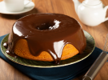

Morango Gelado
Um bolo leve e refrescante com camadas de morango fresco e cobertura cremosa de chantilly gelado, perfeito para os dias quentes.
Misto com Morango
Bolo de massa delicada com recheio generoso de morangos frescos e uma leve camada de creme, proporcionando o equilíbrio perfeito entre doce e ácido.
Chocolate Nevado
Bolo de chocolate super macio, coberto com uma neve de açúcar e chocolate, criando uma mistura deliciosa e irresistível.
Morango e Creme
Uma harmonia entre o doce do morango fresco e a suavidade do creme, em camadas perfeitas, para quem ama a combinação de frutas com um toque cremoso.
Prestígio com Creme e Cereja
A combinação clássica de chocolate, coco e creme, com um toque especial de cerejas frescas, criando um bolo irresistível que agrada todos os paladares.
Cenoura com Chocolate

O clássico bolo de cenoura, super fofinho, coberto com ganache de chocolate, combinando a suavidade da cenoura com o sabor intenso do chocolate.
Chocolate Amargo
Para os amantes de chocolate intenso, esse bolo é perfeito. Feito com chocolate amargo de alta qualidade, ele oferece uma experiência rica e sofisticada para quem prefere sabores menos doces.